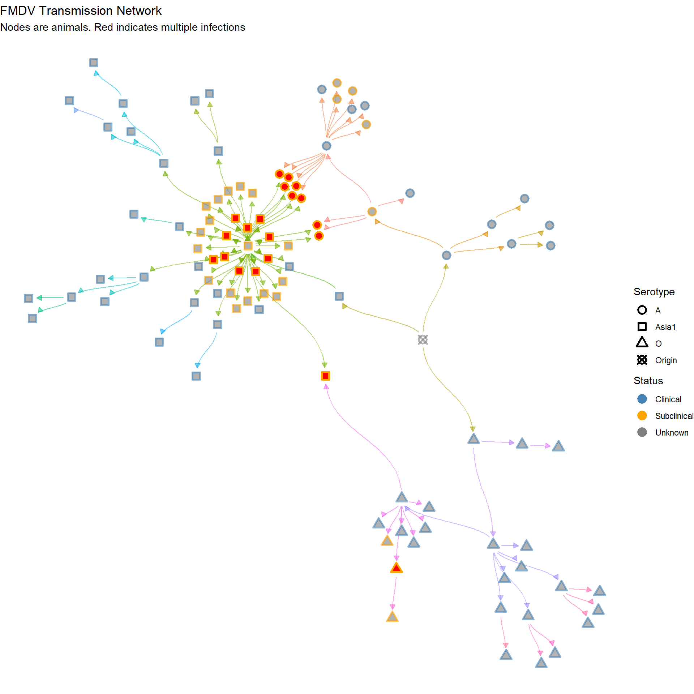
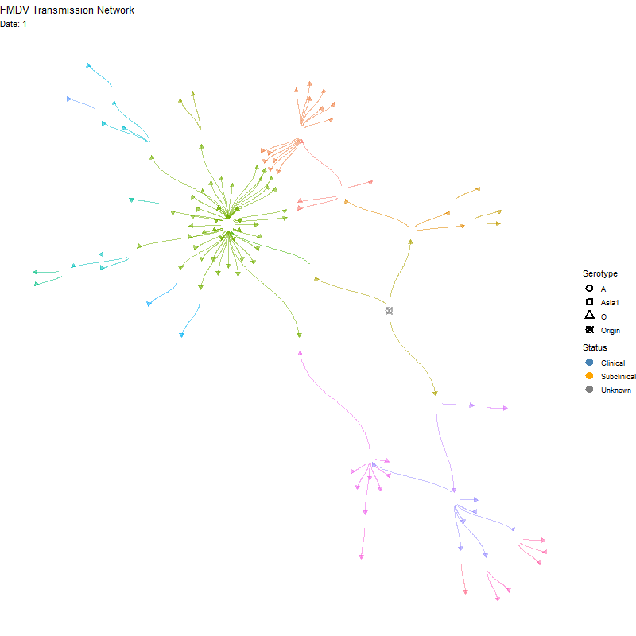

Networks
Inferred transmission networks from time calibrated phylogenies
Transmission Networks
Serotype A
Load time-calibrated MCC tree.
Hide code
sero_A.tree <- read.nexus(here("local/beast/a_1/sero_a.mcc.tre"))Read Beast log file for the tree
Hide code
get_A_stats <- get_tracer_stats(here("local/beast/a_1/sero_a.log.txt"))Loading required package: codaHide code
root_age <- get_A_stats %>%
filter(Parameter == "age.root.") %>%
select(Median) %>%
pull()
tree_mrsd <- get_A_stats %>%
filter(Parameter == "treeModel.rootHeight") %>%
select(Median) %>%
pull() + root_age
sero_A.tree.p <- ptreeFromPhylo(sero_A.tree,
dateLastSample = tree_mrsd)Choose prior
Constructing a gamma distribution that reflects FMDV generation time, ballpark 5-15 days, with 7-10 days being more likely.
Hide code
gam_params <- get_gamma_params(7, c(5, 15))
w.shape <- gam_params$shape
w.scale <- gam_params$scale
set.seed(1976)
check_gamma <- rgamma(1000, w.shape, )Hide code
plot_density(check_gamma, max_x = 20)The dateT parameter is the date when observation stopped. Used 2017.5 due that being the most recent sample across the A, Asia1, and O serotypes in the study.
Hide code
tt_sero_A <- inferTTree(sero_A.tree.p,
mcmcIterations=10000,
w.shape=w.shape,
w.scale=w.scale,
dateT=2017.5)
saveRDS(tt_sero_A, here("local/assets/tt_sero_A.rds"))Serotype Asia1
Hide code
sero_Asia1.tree <- read.nexus(here("local/beast/asia1_1/sero_asia1.mcc.tre"))
Asia1_stats <- get_tracer_stats(here("local/beast/asia1_1/sero_asia1.log.txt"))Hide code
tt_sero_Asia1 <- infer_ttree(sero_Asia1.tree,
Asia1_stats,
w.shape=w.shape,
w.scale=w.scale,
dateT = 2017.5)
saveRDS(tt_sero_Asia1, here("local/assets/tt_sero_Asia1.rds"))Serotype O
Hide code
sero_O.tree <- read.nexus(here("local/beast/o_1/sero_o.mcc.tre"))
O_stats <- get_tracer_stats(here("local/beast/o_1/sero_o.log.txt"))Hide code
tt_sero_O <- infer_ttree(sero_O.tree,
O_stats,
w.shape=w.shape,
w.scale=w.scale,
dateT = 2017.5)
saveRDS(tt_sero_O, here("local/assets/tt_sero_O.rds"))Get Networks
Hide code
A_net <- extract_transmission_network(tt_sero_A) %>%
mutate(Serotype = "A")
Asia1_net <- extract_transmission_network(tt_sero_Asia1) %>%
mutate(Serotype = "Asia1")
O_net <- extract_transmission_network(tt_sero_O) %>%
mutate(Serotype = "O")
all_networks <- rbind(A_net, Asia1_net, O_net)Match Metadata
Hide code
sero_df <- readRDS(here("local/assets/sero_df.rds")) # from preprocessing
animal_codes <- sero_df %>%
filter(status == "Subclinical") %>%
mutate(Status = status,
host_id = label) %>%
select(host_id, animal, farm_code, Status)
all_networks <-left_join(all_networks, animal_codes, by = "host_id") %>%
mutate(animal = as.character(animal),
Status = if_else(is.na(Status), "Clinical", Status),
infected_ani = if_else(Status == "Subclinical", animal, host_id))
all_networks$infector_match <- with(animal_codes,
animal[match(
all_networks$infector,
host_id)])
all_networks <- all_networks %>%
mutate(infector_match = as.character(infector_match),
infector_ani = if_else(is.na(infector_match), infector, infector_match),
infection_date = as.Date(infection_date))Set Vertices and Nodes
Hide code
edges <- data.frame(from = all_networks$infector_ani, to = all_networks$infected_ani)
g <- graph_from_data_frame(edges, directed = TRUE)
V(g)$Status <- "Unknown"
V(g)$Status[V(g)$name %in% all_networks$infected_ani] <- all_networks$Status[match(V(g)$name[V(g)$name %in% all_networks$infected_ani], all_networks$infected_ani)]
V(g)$Serotype <- "Origin"
V(g)$Serotype[V(g)$name %in% all_networks$infected_ani] <-
all_networks$Serotype[match(V(g)$name[V(g)$name %in% all_networks$infected_ani], all_networks$infected_ani)]
V(g)$infection_date <- as.Date("1995-07-10")
V(g)$infection_date[V(g)$name %in% all_networks$infected_ani] <-
all_networks$infection_date[match(V(g)$name[V(g)$name %in% all_networks$infected_ani], all_networks$infected_ani)]
V(g)$infection_date <- as.Date(V(g)$infection_date)
V(g)$infection_steps <- as.integer(as.factor(V(g)$infection_date))Tree network showing descent
Hide code
p <- ggraph(g, layout = 'tree') +
geom_edge_diagonal(start_cap = circle(2, 'mm'), end_cap = circle(2, 'mm'),
color = 'gray20', alpha=0.9,
arrow = arrow(type = "closed", length = unit(2, "mm"))) +
geom_node_point(aes(color = Status, shape = Serotype), size = 4, alpha = 0.6) +
scale_color_manual(values = c("Subclinical" = "orange",
"Clinical" = "steelblue",
"Unknown" = "gray50")) +
#geom_node_label(aes(label = name), repel = TRUE) +
theme_void() +
labs(title = "FMDV Transmission Network",
subtitle = "Nodes are animals, arrows extend from infector to infectee")
pShowing individuals with multiple infections (red color)
Hide code
set.seed(1976)
tg <- as_tbl_graph(g)
tg <- tg %>%
activate(nodes) %>%
mutate(in_degree = centrality_degree(mode = "in"),
multiple_incoming = ifelse(in_degree > 1, "multiple", "single"))
tg <- tg %>%
mutate(alpha = ifelse(multiple_incoming == "multiple", 1, 0.6))
layout <- layout_with_fr(as.igraph(tg), niter = 5000)
layout_df <- as.data.frame(layout)
colnames(layout_df) <- c("x", "y")
spread_factor <- 25
layout_df$x <- layout_df$x * spread_factor
layout_df$y <- layout_df$y * spread_factor
tg <- tg %>%
mutate(x = layout_df$x, y = layout_df$y)
p <- ggraph(tg, x = x, y = y) +
geom_edge_diagonal(aes(color = as.factor(from), alpha = 0.9),
start_cap = circle(3, 'mm'), end_cap = circle(3, 'mm'),
arrow = arrow(type = "closed", length = unit(2, "mm")),
show.legend = FALSE) +
geom_node_point(aes(color = Status, shape = Serotype,
fill = multiple_incoming, alpha = alpha),
size = 3, stroke=1.5) +
scale_shape_manual(values = c("A" = 21,
"Asia1" = 22,
"O" = 24,
"Origin" = 13)) +
scale_color_manual(values = c("Subclinical" = "orange",
"Clinical" = "steelblue",
"Unknown" = "gray50")) +
scale_fill_manual(values = c("multiple" = "red", "single" = NA), guide = "none") +
scale_alpha_identity() +
theme_void() +
labs(title = "FMDV Transmission Network",
subtitle = "Nodes are animals. Red indicates multiple infections")
p
Animated version
Hide code
p <- ggraph(tg, x = x, y = y) +
geom_edge_diagonal(aes(color = as.factor(from), alpha = 0.9),
start_cap = circle(3, 'mm'), end_cap = circle(3, 'mm'),
arrow = arrow(type = "closed", length = unit(2, "mm")),
show.legend = FALSE) +
geom_node_point(aes(color = Status, shape = Serotype,
fill = multiple_incoming, alpha = alpha),
size = 3, stroke=1.5) +
scale_shape_manual(values = c("A" = 21,
"Asia1" = 22,
"O" = 24,
"Origin" = 13)) +
scale_color_manual(values = c("Subclinical" = "orange",
"Clinical" = "steelblue",
"Unknown" = "gray50")) +
scale_fill_manual(values = c("multiple" = "red", "single" = NA), guide = "none") +
scale_alpha_identity() +
theme_void() +
labs(title = "FMDV Transmission Network",
subtitle = "Nodes are animals. Red indicates multiple infections") +
transition_time(infection_steps) +
labs(subtitle = 'Date: {frame_time}') +
shadow_mark(alpha = alpha / 2)
ani_net <- animate(p, width = 800, height = 800,
fps = 10, end_pause = 20,
renderer = gifski_renderer())
anim_save(here("local/assets/coinfect_network_animation.gif"), ani_net)Hide code
knitr::include_graphics(here("local/assets/coinfect_network_animation.gif"))